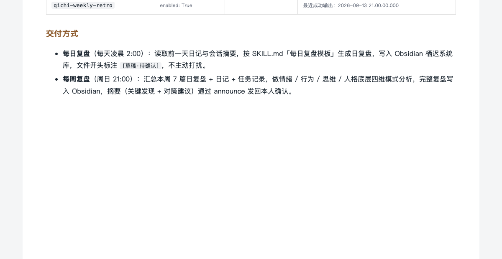
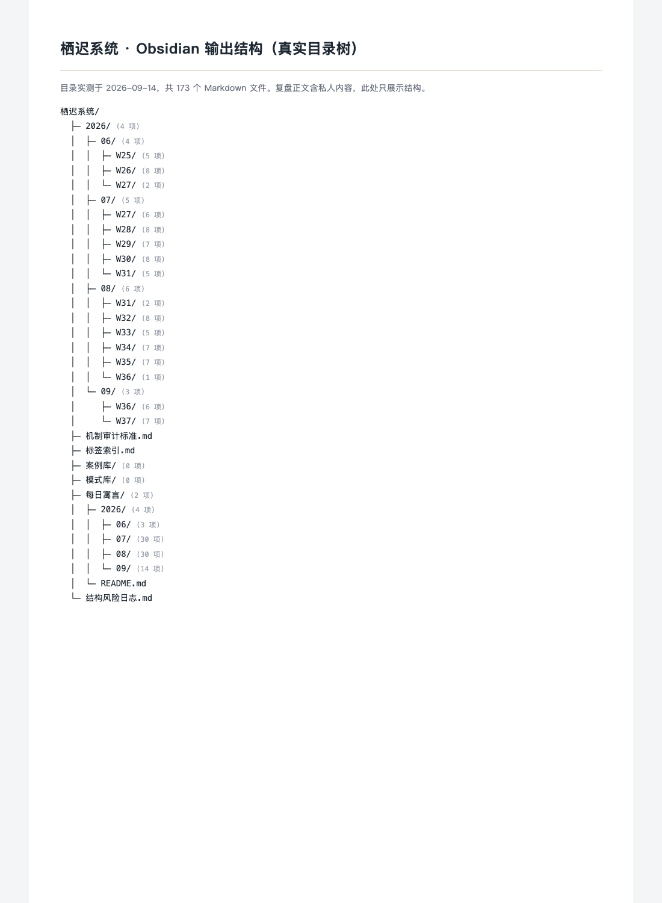
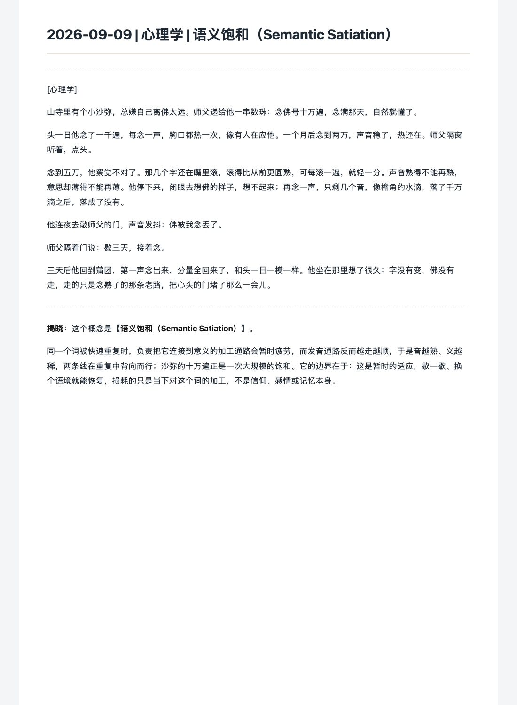

公开案例 / 个人系统 / 更新于 2026-09-14这个站叫 Loki OS，
这个站叫 Loki OS，
站名里的「栖迟」来自一个真的在跑的系统。
如果只用一句话说：我不想靠意志力坚持复盘，就让 cron 每天凌晨替我坐下来——从日记和任务记录里找出反复出现的模式，归因，给对策，写进 Obsidian。复盘正文是我的私人记录，公开的只有结构和机制。

真坐下来的时候，情绪已经过去了。得让系统在事件发生的当天夜里就把信号捡走。
01
CALL SHEET / FROM TEMPLATE TO CRON时间与证据分开记录
01 / 2026-07-05证据：SKILL.md 本体，2026-07-05 起持续使用
02 / 2026-07-30证据：cron 任务配置与 57 条运行记录（本机实测）
03 / 2026-08 起证据：Obsidian 库内的机制审计标准、结构风险日志
04 / 2026-09证据：目录树实测 173 篇（结构公开，正文不公开）
一个复盘系统有了自己的问题清单，这件事我没提前设计。
— CUE 03 / 系统开始审计自己 · 研发时间线
先把方法写成 Skill，而不是写成对话模板
qichi-life-os 的 SKILL.md 定下三条硬规则：数据来源按优先级排（日记、任务记录、书签、用户画像）；输出统一落进 Obsidian 的栖迟系统目录；分析走情绪、行为、思维、人格底层四个维度，每次运行都做模式识别和归因对策，不是自由发挥的聊天。
接上 cron，让它不再需要我记得
qichi-daily-retro 每天凌晨 2:00 自动跑日复盘，读取前一天的日记和会话摘要，写入对应年/月/周目录，文件开头标注【草稿·待确认】，不主动打扰；qichi-weekly-retro 每周日 21:00 汇总本周七天，做四维模式分析，摘要通过 announce 发回来等我确认。到 2026-09-14，本机运行记录里日复盘 50 次、周复盘 7 次。
系统开始审计自己
跑了几周之后，库里面长出了机制审计标准、结构风险日志和标签索引这类自我审查文件。周复盘的「待确认」里会自己提出管道问题，比如日记目录持续缺位，是要修管道还是认可「会话即源」。一个复盘系统有了自己的问题清单，这件事我没提前设计。
积累到 173 篇，才知道模式识别在识别什么
按年/月/周归档的日复盘和周复盘，加上每日寓言、模式库、案例库和标签索引，共 173 篇 Markdown。单看一天的复盘只是记录；连着看一个季度，反复出现的触发点和归因方式才会浮出来——这正是当初把它做成 cron 而不是模板的原因。
02

EVIDENCE 01cron 运行配置 · 真实配置渲染每日 02:00 日复盘、周日 21:00 周复盘，两个任务都处于启用状态；运行记录数来自本机 runs 目录实测（50 + 7 次），标注了最近一次成功输出。REAL CONFIG / RENDERED 2026-09-14 EVIDENCE 02Obsidian 输出结构 · 真实目录树按年/月/周归档，旁边是模式库、案例库、标签索引和每日寓言；共 173 篇，正文不公开。STRUCTURE ONLY / 173 MD FILES EVIDENCE 03每日寓言 · 库内真实文稿栖迟系统库里每天生成一篇用故事讲一个概念的小文，这篇讲语义饱和。内容本身公开安全，选它代表库内文稿的形态。REAL VAULT DOC / 2026-09-09
REAL ARTIFACTS / 每张图只说明一件事它真的每天在跑，
它真的每天在跑，
也真的写进了我的库。
复盘正文属于私人记录，全部不公开。下面三张图分别来自真实的 cron 配置、真实的 Obsidian 目录结构和真实生成的库内文稿，都只展示结构和公开安全的内容。


03
ALREADY PROVED WORKING, NOT FINISHED NOT CLAIMED
已经做到
- 日复盘、周复盘两条 cron 链路自动运行（50 + 7 次运行记录）
- 复盘统一写入 Obsidian，累计 173 篇并按年月周归档
- 四维模式识别与归因对策框架在 SKILL.md 落地
- 库内长出机制审计标准与结构风险日志，系统会审计自己
能用但仍需维护
- 复盘输出仍带【草稿·待确认】，需要人工确认后才算定稿
- 日记管道缺位时要靠会话记录补源，数据来源的优先级会漂移
- 模式库和案例库还很薄，价值依赖长期积累
没有证明
- 复盘正文是私人记录，不在站上展示，也无法被第三方核验内容
- 不宣称系统能预测行为或改变人格，它只做识别和归因
- 没有公开产品入口，「在跑」指本机 cron，不指对外服务